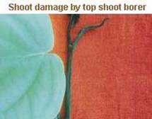

| Home |
| PEST OF PEPPER |
mAJOR pESTS |
| 1. Pollu beetle |
| 2. Top shoot borer |
| 3. Berry gall midge |
| 4. Marginal gall thrips |
| 1. Coconut scale |
| 2. Whitefly |
| Questions |
| Download Notes |
PEPPER :: MAJOR PEST :: TOP SHOOT BORER
2. Top shoot borer: Cydia hemidoxa (Eucosmidae: Lepidoptera)
Distribution and status: India
Damage symptoms
Serious pests of pepper in Kerala. The larva feeds on growing and young leaves causing drying and dying of terminal shoots.
|  |
Bionomics
Larva greyish green, 12-14 mm long, larval period 10 -15 days. Pupates inside shoots, pupal period 8 – 10 days. Adult moth is tiny, forewing black with distal half red, hind wing greyish. Life cycle completed in a month.
Management
Spray endosulfan 35 EC 1.0 L or quinalphos 25 EC 1.0 L in 500 - 1000 L water/ha